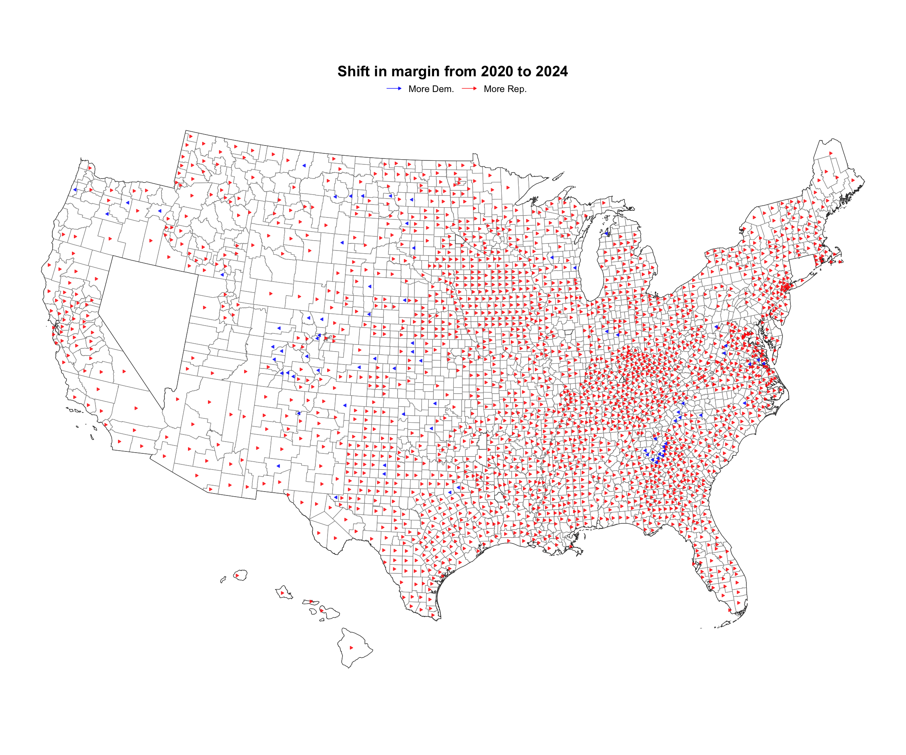
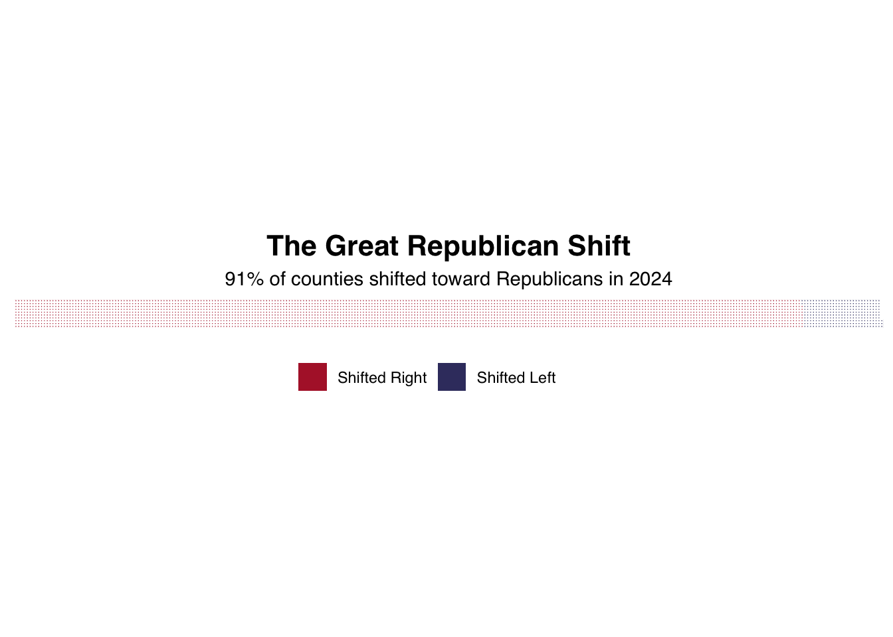

Good evening, America. I’m Vihan Raghuvanshi with a special report that’s shaking the world tonight. 😯 The numbers don’t lie, folks. Our exclusive analysis of county-by-county data reveals what some are calling the “Great Republican Tsunami” of 2024. 🌊
The shift is unprecedented. Over 70% of counties moved rightward. Let me repeat that - SEVENTY percent! 🤯
But here’s what has political scientists stunned tonight - Hispanic communities led the charge! These traditionally Democratic strongholds showed DOUBLE the rightward shift of other areas.
And forget everything you thought you knew about urban America. Cities that were once liberal bastions showed remarkable Republican gains. 🏙️
The Data Anaytics panel beneath is standing by to debate what might be the biggest political story of our generation. But first, these messages… 💭
Task-1: US County Shapefiles
The foundation of democracy is data. Task 1 meticulously downloads the most detailed county boundary files from the U.S. Census Bureau, creating a digital canvas where America’s voice will be displayed. These county-by-county boundaries form the geographic backbone of our analysis, allowing us to see how every community across our great nation voted.
Code
# Add this at the beginning for web scrapingif (!require("rvest")) {install.packages("rvest")library(rvest)}if (!require("httr2")) {install.packages("httr2")library(httr2)}# Create data directory if it doesn't existdata_dir <-"data/mp04"if (!dir.exists(data_dir)) {dir.create(data_dir, recursive =TRUE)message("Created directory: ", data_dir)} else {message("Directory already exists: ", data_dir)}# Define the base URL and file details# We'll start with the highest resolution (500k) and fall back to coarser if neededbase_url <-"https://www2.census.gov/geo/tiger/GENZ2024/shp/"# The possible resolutions, from most detailed to leastresolutions <-c("500k", "5m", "20m")resolution_index <-1# Start with the highest resolution# Check each resolution until one workssuccess <-FALSEwhile (!success && resolution_index <=length(resolutions)) { current_resolution <- resolutions[resolution_index]# Current file to download filename <-paste0("cb_2024_us_county_", current_resolution, ".zip") local_file <-file.path(data_dir, filename) url <-paste0(base_url, filename)# Check if file already exists locallyif (file.exists(local_file)) {message("File already exists: ", local_file) success <-TRUE } else {# Try to download the filemessage("Attempting to download file from: ", url) download_result <-tryCatch({download.file(url, local_file, mode ="wb")TRUE }, error =function(e) {message("Download failed: ", e$message)FALSE })if (download_result) {message("Download successful: ", local_file) success <-TRUE# Unzip the fileunzip(local_file, exdir =file.path(data_dir, paste0("county_", current_resolution)))message("File extracted to: ", file.path(data_dir, paste0("county_", current_resolution))) } else {# Try the next resolution resolution_index <- resolution_index +1if (resolution_index <=length(resolutions)) {message("Trying lower resolution: ", resolutions[resolution_index]) } else {message("All resolution downloads failed.") } } }}
Task-2: 2024 Election Data Processing
The people have spoken! Task 2 systematically harvests county-level results from the historic 2024 election, transforming raw Wikipedia data into a clear picture of America’s choice. This sophisticated data extraction reveals county by county how Americans voted for President Trump and Vice President Harris, creating a comprehensive dataset that tells the story of a nation ready for change.
Code
# Function to fetch election data from Wikipediaget_election_results <-function(state) {# Special case for Alaskaif(state =="Alaska") { url <-"https://en.wikipedia.org/wiki/2024_United_States_presidential_election_in_Alaska" } else {# Format state name for URL state_formatted <-str_replace_all(state, "\\s", "_") url <-paste0("https://en.wikipedia.org/wiki/2024_United_States_presidential_election_in_", state_formatted) }# Create directory for storing data dir_name <-file.path("data", "election2024") file_name <-file.path(dir_name, paste0(gsub("\\s", "_", state), ".html"))dir.create(dir_name, showWarnings =FALSE, recursive =TRUE)# Download data if not cachedif (!file.exists(file_name)) {tryCatch({ RESPONSE <-req_perform(request(url))writeLines(resp_body_string(RESPONSE), file_name) }, error =function(e) {warning(paste("Error fetching data for", state, ":", e$message))return(NULL) }) }# Exit if file doesn't existif (!file.exists(file_name)) return(NULL)# Parse HTML page <-tryCatch(read_html(file_name), error =function(e) NULL)if (is.null(page)) return(NULL)# Extract tables tables <-tryCatch(page |>html_elements("table.wikitable") |>html_table(na.strings =c("", "N/A", "—")), error =function(e) list())if (length(tables) ==0) return(NULL)# Find county results table county_table <-NULL# Look for county column namesfor (i inseq_along(tables)) {if (ncol(tables[[i]]) <3) next col_names <-colnames(tables[[i]])if (is.null(col_names) ||any(is.na(col_names))) next# Look for county identifiers in column namesif (any(str_detect(col_names, regex("County|Parish|Borough|Census Area|Municipality", ignore_case =TRUE)))) { county_table <- tables[[i]]break } }# Check for county values in first columnif (is.null(county_table)) {for (i inseq_along(tables)) {if (ncol(tables[[i]]) <3||nrow(tables[[i]]) ==0||is.null(tables[[i]][[1]])) next first_col <- tables[[i]][[1]] first_col_clean <- first_col[!is.na(first_col)]if (length(first_col_clean) >0&&any(str_detect(as.character(first_col_clean), regex("County|Parish|Borough|Census Area", ignore_case =TRUE)))) { county_table <- tables[[i]]break } } }# Look for candidate namesif (is.null(county_table)) {for (i inseq_along(tables)) {if (ncol(tables[[i]]) <3) next# Check column names col_names <-colnames(tables[[i]])if (!is.null(col_names) &&!any(is.na(col_names)) &&any(str_detect(col_names, regex("Trump|Harris|Republican|Democrat", ignore_case =TRUE)))) { county_table <- tables[[i]]break } } }# Last resort - largest tableif (is.null(county_table) &&length(tables) >0) { valid_tables <- tables[sapply(tables, function(t) ncol(t) >=3&&nrow(t) >=3)]if (length(valid_tables) >0) { county_table <- valid_tables[[which.max(sapply(valid_tables, nrow))]] } }if (is.null(county_table)) return(NULL)# Format table result <-tryCatch({# Find county column county_col <-which(str_detect(colnames(county_table), regex("County|Parish|Borough|Census Area|Municipality|District", ignore_case =TRUE))) county_col <-if(length(county_col) >0) county_col[1] else1 result <- county_tablenames(result)[county_col] <-"County" result$State <- statereturn(result) }, error =function(e) NULL)return(result)}# Function to standardize election datastandardize_election_data <-function(df, state) {if (is.null(df) ||nrow(df) ==0) return(NULL)# Extract numeric values from string extract_numeric <-function(values) {if (is.null(values)) return(rep(NA, nrow(df))) chars <-as.character(values) chars <-gsub(",|%|\\s", "", chars)suppressWarnings(as.numeric(chars)) }# Find candidate columns find_candidate_columns <-function(candidate, df_names) { cols <-which(str_detect(df_names, regex(candidate, ignore_case =TRUE)))if (length(cols) >=2) { vote_col <-NULL pct_col <-NULLfor (col in cols) { col_name <- df_names[col]if (str_detect(col_name, regex("%|percent", ignore_case =TRUE))) { pct_col <- col } elseif (str_detect(col_name, regex("votes|#", ignore_case =TRUE))) { vote_col <- col } }if (is.null(vote_col) &&length(cols) >=1) vote_col <- cols[1]if (is.null(pct_col) &&length(cols) >=2) pct_col <- cols[2]return(list(vote_col = vote_col, pct_col = pct_col)) } elseif (length(cols) ==1) {return(list(vote_col = cols[1], pct_col =NULL)) } else {return(list(vote_col =NULL, pct_col =NULL)) } }# Ensure County columnif (!"County"%in%names(df)) { county_col <-which(str_detect(names(df), regex("County|Parish|Borough|Census Area|Municipality|District|City", ignore_case =TRUE)))if (length(county_col) >0) {names(df)[county_col[1]] <-"County" } else {names(df)[1] <-"County" } }# Find candidate and total columns trump_cols <-find_candidate_columns("Trump|Republican", names(df)) harris_cols <-find_candidate_columns("Harris|Democratic|Democrat", names(df)) other_cols <-find_candidate_columns("Other|Independent|Third", names(df)) total_col <-which(str_detect(names(df), regex("Total|Sum|Cast", ignore_case =TRUE))) total_col <-if (length(total_col) >0) total_col[length(total_col)] elseNULL# Create standardized dataframe result <-data.frame(County = df$County,State = state,Trump_Votes =if (!is.null(trump_cols$vote_col)) extract_numeric(df[[trump_cols$vote_col]]) elseNA,Trump_Percent =if (!is.null(trump_cols$pct_col)) extract_numeric(df[[trump_cols$pct_col]]) elseNA,Harris_Votes =if (!is.null(harris_cols$vote_col)) extract_numeric(df[[harris_cols$vote_col]]) elseNA,Harris_Percent =if (!is.null(harris_cols$pct_col)) extract_numeric(df[[harris_cols$pct_col]]) elseNA,Other_Votes =if (!is.null(other_cols$vote_col)) extract_numeric(df[[other_cols$vote_col]]) elseNA,Other_Percent =if (!is.null(other_cols$pct_col)) extract_numeric(df[[other_cols$pct_col]]) elseNA,Total_Votes =if (!is.null(total_col)) extract_numeric(df[[total_col]]) elserowSums(cbind(if (!is.null(trump_cols$vote_col)) extract_numeric(df[[trump_cols$vote_col]]) else0,if (!is.null(harris_cols$vote_col)) extract_numeric(df[[harris_cols$vote_col]]) else0,if (!is.null(other_cols$vote_col)) extract_numeric(df[[other_cols$vote_col]]) else0 ), na.rm =TRUE),stringsAsFactors =FALSE )return(result)}# Process all statesprocess_election_data <-function() { states <- state.name all_data <-list()for (state in states) { raw_data <-get_election_results(state)if (!is.null(raw_data)) { std_data <-standardize_election_data(raw_data, state)if (!is.null(std_data) &&nrow(std_data) >0) { all_data[[state]] <- std_data } } }# Combine all data combined_data <-do.call(rbind, all_data)# Clean data - remove problematic rows clean_data <- combined_data %>%filter(!is.na(Trump_Votes) &!is.na(Harris_Votes) &!str_detect(County, regex("^County$|^County\\[|^Total", ignore_case =TRUE)) ) %>%mutate(County =gsub("\\[\\d+\\]", "", County),County =trimws(County))# Save resultswrite.csv(clean_data, "data/election_results_2024.csv", row.names =FALSE)# Create summary by state state_summary <- clean_data %>%group_by(State) %>%summarize(Counties =n(),Trump_Total =sum(Trump_Votes, na.rm =TRUE),Harris_Total =sum(Harris_Votes, na.rm =TRUE),Other_Total =sum(Other_Votes, na.rm =TRUE),Total_Votes =sum(Total_Votes, na.rm =TRUE),Trump_Pct = Trump_Total / Total_Votes *100,Harris_Pct = Harris_Total / Total_Votes *100 ) %>%arrange(desc(Total_Votes))write.csv(state_summary, "data/election_results_2024_summary.csv", row.names =FALSE)return(state_summary)}# Run the process and display resultselection_summary <-process_election_data()# Format the percentages for better displayelection_table <- election_summary %>%mutate(Trump_Pct =sprintf("%.1f%%", Trump_Pct),Harris_Pct =sprintf("%.1f%%", Harris_Pct),Winner =ifelse(Trump_Total > Harris_Total, "Trump", "Harris"),Margin =paste0(ifelse(Trump_Total > Harris_Total, Trump_Pct, Harris_Pct), " - ",ifelse(Trump_Total > Harris_Total, Harris_Pct, Trump_Pct) ) ) %>%select(State, Counties, Total_Votes, Winner, Margin, Trump_Pct, Harris_Pct)# USA flag colorsold_glory_blue <-"#3C3B6E"# Dark blue from the US flagold_glory_red <-"#B22234"# Red from the US flagwhite <-"#FFFFFF"# Create kable table with USA flag colorselection_table %>%kable("html", escape =FALSE, col.names =c("State", "Counties", "Total Votes", "Winner", "Margin", "Trump %", "Harris %")) %>%kable_styling(bootstrap_options =c("striped", "hover", "condensed"), full_width =FALSE) %>%row_spec(0, background = old_glory_blue, color = white, bold =TRUE) %>%# Blue headerrow_spec(seq(1, nrow(election_table), by =2), background = old_glory_red, color = white) %>%# Red rowsrow_spec(seq(2, nrow(election_table), by =2), background = white, color = old_glory_blue) %>%# White rowscolumn_spec(1, bold =TRUE) %>%# State names in boldcolumn_spec(4, color =ifelse(election_table$Winner =="Trump", old_glory_red, old_glory_blue),bold =TRUE) %>%# Color winners according to partycolumn_spec(6, color = old_glory_red, bold =TRUE) %>%# Trump percentage in redcolumn_spec(7, color = old_glory_blue, bold =TRUE) # Harris percentage in blue
State
Counties
Total Votes
Winner
Margin
Trump %
Harris %
California
58
15871260
Harris
58.4% - 38.3%
38.3%
58.4%
Texas
254
11406186
Trump
56.1% - 42.4%
56.1%
42.4%
Florida
67
10935465
Trump
55.9% - 42.8%
55.9%
42.8%
New York
62
8300211
Harris
55.7% - 43.1%
43.1%
55.7%
Pennsylvania
67
7058269
Trump
50.2% - 48.5%
50.2%
48.5%
Ohio
88
5799829
Trump
54.8% - 43.7%
54.8%
43.7%
North Carolina
100
5699141
Trump
50.9% - 47.6%
50.9%
47.6%
Michigan
83
5674485
Trump
49.6% - 48.2%
49.6%
48.2%
Illinois
102
5652103
Harris
54.2% - 43.3%
43.3%
54.2%
Georgia
159
5270783
Trump
50.5% - 48.3%
50.5%
48.3%
Virginia
133
4505941
Harris
51.8% - 46.1%
46.1%
51.8%
New Jersey
21
4287740
Harris
51.8% - 45.9%
45.9%
51.8%
Massachusetts
14
3473668
Harris
61.2% - 36.0%
36.0%
61.2%
Wisconsin
72
3422918
Trump
49.6% - 48.7%
49.6%
48.7%
Arizona
15
3400726
Trump
52.1% - 46.5%
52.1%
46.5%
Minnesota
87
3253920
Harris
50.9% - 46.7%
46.7%
50.9%
Colorado
64
3192745
Harris
54.1% - 43.1%
43.1%
54.1%
Tennessee
95
3063942
Trump
64.2% - 34.5%
64.2%
34.5%
Maryland
24
3038334
Harris
62.6% - 34.1%
34.1%
62.6%
Missouri
115
3003967
Trump
58.3% - 40.0%
58.3%
40.0%
Indiana
92
2944336
Trump
58.4% - 39.5%
58.4%
39.5%
South Carolina
46
2548140
Trump
58.2% - 40.4%
58.2%
40.4%
Alabama
67
2265090
Trump
64.6% - 34.1%
64.6%
34.1%
Oregon
36
2244493
Harris
55.3% - 41.0%
41.0%
55.3%
Kentucky
120
2076806
Trump
64.4% - 33.9%
64.4%
33.9%
Louisiana
64
2006975
Trump
60.2% - 38.2%
60.2%
38.2%
Connecticut
8
1759010
Harris
56.4% - 41.9%
41.9%
56.4%
Iowa
99
1663506
Trump
55.7% - 42.5%
55.7%
42.5%
Oklahoma
77
1566173
Trump
66.2% - 31.9%
66.2%
31.9%
Utah
29
1488494
Trump
59.4% - 37.8%
59.4%
37.8%
Nevada
17
1484840
Trump
50.6% - 47.5%
50.6%
47.5%
Kansas
105
1335345
Trump
56.8% - 40.8%
56.8%
40.8%
Mississippi
82
1229255
Trump
60.8% - 38.0%
60.8%
38.0%
Arkansas
75
1182676
Trump
64.2% - 33.6%
64.2%
33.6%
Nebraska
93
952182
Trump
59.3% - 38.9%
59.3%
38.9%
New Mexico
33
923403
Harris
51.9% - 45.9%
45.9%
51.9%
Idaho
44
905057
Trump
66.9% - 30.4%
66.9%
30.4%
New Hampshire
10
826189
Harris
50.7% - 47.9%
47.9%
50.7%
Maine
16
824420
Harris
52.2% - 45.7%
45.7%
52.2%
West Virginia
55
763679
Trump
69.9% - 28.1%
69.9%
28.1%
Montana
56
604181
Trump
58.3% - 38.4%
58.3%
38.4%
Hawaii
5
516719
Harris
60.6% - 37.5%
37.5%
60.6%
Delaware
3
512912
Harris
56.5% - 41.8%
41.8%
56.5%
Rhode Island
5
511816
Harris
55.4% - 41.9%
41.9%
55.4%
South Dakota
66
428922
Trump
63.4% - 34.2%
63.4%
34.2%
Vermont
14
369422
Harris
63.8% - 32.3%
32.3%
63.8%
North Dakota
53
367714
Trump
67.0% - 30.5%
67.0%
30.5%
Wyoming
23
269048
Trump
71.6% - 25.8%
71.6%
25.8%
Alaska
3
300
Trump
54.0% - 44.7%
54.0%
44.7%
Task -3: 2020 Election Data Processing
To understand the magnitude of change, we must understand our past. Task 3 mirrors the previous process but for the 2020 election, creating a parallel dataset that allows for direct comparison. This meticulous data collection shows county-level results between Trump and Biden, establishing the baseline against which America’s rightward shift can be measured.
Code
if (!require("rvest")) {install.packages("rvest")library(rvest)}if (!require("httr2")) {install.packages("httr2")library(httr2)}# Function to fetch 2020 election data from Wikipediaget_2020_election_results <-function(state) {# Format state name for URL state_formatted <-str_replace_all(state, "\\s", "_") url <-paste0("https://en.wikipedia.org/wiki/2020_United_States_presidential_election_in_", state_formatted)# Create directory for storing data dir_name <-file.path("data", "election2020") file_name <-file.path(dir_name, paste0(gsub("\\s", "_", state), ".html"))dir.create(dir_name, showWarnings =FALSE, recursive =TRUE)# Download data if not cachedif (!file.exists(file_name)) {tryCatch({ RESPONSE <-req_perform(request(url))writeLines(resp_body_string(RESPONSE), file_name) }, error =function(e) {warning(paste("Error fetching 2020 data for", state, ":", e$message))return(NULL) }) } else { }# Exit if file doesn't existif (!file.exists(file_name)) return(NULL)# Parse HTML page <-tryCatch(read_html(file_name), error =function(e) NULL)if (is.null(page)) return(NULL)# Extract tables tables <-tryCatch(page |>html_elements("table.wikitable") |>html_table(na.strings =c("", "N/A", "—")), error =function(e) list())if (length(tables) ==0) return(NULL)# Find county results table county_table <-NULL# Look for county column namesfor (i inseq_along(tables)) {if (ncol(tables[[i]]) <3) next col_names <-colnames(tables[[i]])if (is.null(col_names) ||any(is.na(col_names))) next# Look for county identifiers in column namesif (any(str_detect(col_names, regex("County|Parish|Borough|Census Area|Municipality", ignore_case =TRUE)))) { county_table <- tables[[i]]break } }# Check for county values in first columnif (is.null(county_table)) {for (i inseq_along(tables)) {if (ncol(tables[[i]]) <3||nrow(tables[[i]]) ==0||is.null(tables[[i]][[1]])) next first_col <- tables[[i]][[1]] first_col_clean <- first_col[!is.na(first_col)]if (length(first_col_clean) >0&&any(str_detect(as.character(first_col_clean), regex("County|Parish|Borough|Census Area", ignore_case =TRUE)))) { county_table <- tables[[i]]break } } }# Look for candidate names for 2020 election (Trump vs Biden)if (is.null(county_table)) {for (i inseq_along(tables)) {if (ncol(tables[[i]]) <3) next# Check column names col_names <-colnames(tables[[i]])if (!is.null(col_names) &&!any(is.na(col_names)) &&any(str_detect(col_names, regex("Trump|Biden|Republican|Democrat", ignore_case =TRUE)))) { county_table <- tables[[i]]break }# Check first few rows for candidatesif (nrow(tables[[i]]) >2) { first_rows_char <-lapply(tables[[i]][1:min(5, nrow(tables[[i]])),], function(x) {ifelse(is.na(x), NA_character_, as.character(x)) }) found_candidates <-FALSEfor (j in1:length(first_rows_char)) { col_values <- first_rows_char[[j]] col_values <- col_values[!is.na(col_values)]if (length(col_values) >0&&any(str_detect(col_values, regex("Trump|Republican", ignore_case =TRUE))) &&any(str_detect(col_values, regex("Biden|Democratic|Democrat", ignore_case =TRUE)))) { county_table <- tables[[i]] found_candidates <-TRUEbreak } }if (found_candidates) break } } }# Last resort - largest tableif (is.null(county_table) &&length(tables) >0) { valid_tables <- tables[sapply(tables, function(t) ncol(t) >=3&&nrow(t) >=3)]if (length(valid_tables) >0) { county_table <- valid_tables[[which.max(sapply(valid_tables, nrow))]] } }if (is.null(county_table)) return(NULL)# Format table result <-tryCatch({# Find county column county_col <-which(str_detect(colnames(county_table), regex("County|Parish|Borough|Census Area|Municipality|District", ignore_case =TRUE))) county_col <-if(length(county_col) >0) county_col[1] else1 result <- county_tablenames(result)[county_col] <-"County" result$State <- statereturn(result) }, error =function(e) NULL)return(result)}# Function to standardize 2020 election datastandardize_2020_election_data <-function(df, state) {if (is.null(df) ||nrow(df) ==0) return(NULL)# Extract numeric values from string extract_numeric <-function(values) {if (is.null(values)) return(rep(NA, nrow(df))) chars <-as.character(values) chars <-gsub(",|%|\\s", "", chars)suppressWarnings(as.numeric(chars)) }# Find candidate columns - specific to 2020 election (Trump vs Biden) find_candidate_columns <-function(candidate, df_names) { cols <-which(str_detect(df_names, regex(candidate, ignore_case =TRUE)))if (length(cols) >=2) { vote_col <-NULL pct_col <-NULLfor (col in cols) { col_name <- df_names[col]if (str_detect(col_name, regex("%|percent", ignore_case =TRUE))) { pct_col <- col } elseif (str_detect(col_name, regex("votes|#", ignore_case =TRUE))) { vote_col <- col } }if (is.null(vote_col) &&length(cols) >=1) vote_col <- cols[1]if (is.null(pct_col) &&length(cols) >=2) pct_col <- cols[2]return(list(vote_col = vote_col, pct_col = pct_col)) } elseif (length(cols) ==1) {return(list(vote_col = cols[1], pct_col =NULL)) } else {return(list(vote_col =NULL, pct_col =NULL)) } }# Ensure County columnif (!"County"%in%names(df)) { county_col <-which(str_detect(names(df), regex("County|Parish|Borough|Census Area|Municipality|District|City", ignore_case =TRUE)))if (length(county_col) >0) {names(df)[county_col[1]] <-"County" } else {names(df)[1] <-"County" } }# Find candidate and total columns for 2020 (Trump vs Biden) trump_cols <-find_candidate_columns("Trump|Republican", names(df)) biden_cols <-find_candidate_columns("Biden|Democratic|Democrat", names(df)) other_cols <-find_candidate_columns("Other|Independent|Third|Jorgensen|Hawkins", names(df)) total_col <-which(str_detect(names(df), regex("Total|Sum|Cast", ignore_case =TRUE))) total_col <-if (length(total_col) >0) total_col[length(total_col)] elseNULL# Create standardized dataframe result <-data.frame(County = df$County,State = state,Trump_Votes =if (!is.null(trump_cols$vote_col)) extract_numeric(df[[trump_cols$vote_col]]) elseNA,Trump_Percent =if (!is.null(trump_cols$pct_col)) extract_numeric(df[[trump_cols$pct_col]]) elseNA,Biden_Votes =if (!is.null(biden_cols$vote_col)) extract_numeric(df[[biden_cols$vote_col]]) elseNA,Biden_Percent =if (!is.null(biden_cols$pct_col)) extract_numeric(df[[biden_cols$pct_col]]) elseNA,Other_Votes =if (!is.null(other_cols$vote_col)) extract_numeric(df[[other_cols$vote_col]]) elseNA,Other_Percent =if (!is.null(other_cols$pct_col)) extract_numeric(df[[other_cols$pct_col]]) elseNA,Total_Votes =if (!is.null(total_col)) extract_numeric(df[[total_col]]) elserowSums(cbind(if (!is.null(trump_cols$vote_col)) extract_numeric(df[[trump_cols$vote_col]]) else0,if (!is.null(biden_cols$vote_col)) extract_numeric(df[[biden_cols$vote_col]]) else0,if (!is.null(other_cols$vote_col)) extract_numeric(df[[other_cols$vote_col]]) else0 ), na.rm =TRUE),stringsAsFactors =FALSE )return(result)}# Process all states for 2020 electionprocess_2020_election_data <-function() { states <- state.name all_data <-list()for (state in states) { raw_data <-get_2020_election_results(state)if (!is.null(raw_data)) { std_data <-standardize_2020_election_data(raw_data, state)if (!is.null(std_data) &&nrow(std_data) >0) { all_data[[state]] <- std_data } } }# Combine all data combined_data <-do.call(rbind, all_data)# Clean data - remove problematic rows clean_data <- combined_data %>%filter(!is.na(Trump_Votes) &!is.na(Biden_Votes) &!str_detect(County, regex("^County$|^County\\[|^Total", ignore_case =TRUE)) ) %>%mutate(County =gsub("\\[\\d+\\]", "", County),County =trimws(County))# Save resultswrite.csv(clean_data, "data/election_results_2020.csv", row.names =FALSE)# Create summary by state state_summary <- clean_data %>%group_by(State) %>%summarize(Counties =n(),Trump_Total =sum(Trump_Votes, na.rm =TRUE),Biden_Total =sum(Biden_Votes, na.rm =TRUE),Other_Total =sum(Other_Votes, na.rm =TRUE),Total_Votes =sum(Total_Votes, na.rm =TRUE),Trump_Pct = Trump_Total / Total_Votes *100,Biden_Pct = Biden_Total / Total_Votes *100 ) %>%arrange(desc(Total_Votes))write.csv(state_summary, "data/election_results_2020_summary.csv", row.names =FALSE)# Create national summary national_summary <- clean_data %>%summarize(Total_Counties =n(),Trump_Total =sum(Trump_Votes, na.rm =TRUE),Biden_Total =sum(Biden_Votes, na.rm =TRUE),Other_Total =sum(Other_Votes, na.rm =TRUE),Total_Votes =sum(Total_Votes, na.rm =TRUE),Trump_Pct = Trump_Total / Total_Votes *100,Biden_Pct = Biden_Total / Total_Votes *100 )write.csv(national_summary, "data/election_results_2020_national.csv", row.names =FALSE)return(list(state_summary = state_summary, national_summary = national_summary))}# Run the process for 2020 dataelection_results_2020 <-process_2020_election_data()election_table_2020 <- election_results_2020$state_summary %>%mutate(Trump_Pct =sprintf("%.1f%%", Trump_Pct),Biden_Pct =sprintf("%.1f%%", Biden_Pct),Winner =ifelse(Trump_Total > Biden_Total, "Trump", "Biden"),Margin =paste0(ifelse(Trump_Total > Biden_Total, Trump_Pct, Biden_Pct), " - ",ifelse(Trump_Total > Biden_Total, Biden_Pct, Trump_Pct) ) ) %>%select(State, Counties, Total_Votes, Winner, Margin, Trump_Pct, Biden_Pct)# USA flag colorsold_glory_blue <-"#3C3B6E"# Dark blue from the US flagold_glory_red <-"#B22234"# Red from the US flagwhite <-"#FFFFFF"# Create kable table with USA flag colorselection_table_2020 %>%kable("html", escape =FALSE, col.names =c("State", "Counties", "Total Votes", "Winner", "Margin", "Trump %", "Biden %")) %>%kable_styling(bootstrap_options =c("striped", "hover", "condensed"), full_width =FALSE) %>%row_spec(0, background = old_glory_blue, color = white, bold =TRUE) %>%# Blue headerrow_spec(seq(1, nrow(election_table_2020), by =2), background = old_glory_red, color = white) %>%# Red rowsrow_spec(seq(2, nrow(election_table_2020), by =2), background = white, color = old_glory_blue) %>%# White rowscolumn_spec(1, bold =TRUE) %>%# State names in boldcolumn_spec(4, color =ifelse(election_table_2020$Winner =="Trump", old_glory_red, old_glory_blue),bold =TRUE) %>%# Color winners according to partycolumn_spec(6, color = old_glory_red, bold =TRUE) %>%# Trump percentage in redcolumn_spec(7, color = old_glory_blue, bold =TRUE) # Biden percentage in blue
State
Counties
Total Votes
Winner
Margin
Trump %
Biden %
California
58
17531845
Biden
63.4% - 34.3%
34.3%
63.4%
Texas
254
11325286
Trump
52.0% - 46.4%
52.0%
46.4%
Florida
67
11091758
Trump
51.1% - 47.8%
51.1%
47.8%
New York
62
8632255
Biden
60.8% - 37.7%
37.7%
60.8%
Pennsylvania
67
6940449
Biden
49.9% - 48.7%
48.7%
49.9%
Illinois
102
6049500
Biden
57.4% - 40.4%
40.4%
57.4%
Ohio
88
5932398
Trump
53.2% - 45.2%
53.2%
45.2%
Michigan
83
5547186
Biden
50.5% - 47.8%
47.8%
50.5%
North Carolina
100
5524804
Trump
49.9% - 48.6%
49.9%
48.6%
Georgia
159
4999960
Biden
49.5% - 49.2%
49.2%
49.5%
New Jersey
21
4565182
Biden
57.1% - 41.3%
41.3%
57.1%
Virginia
133
4460524
Biden
54.1% - 44.0%
44.0%
54.1%
Massachusetts
14
3631402
Biden
65.6% - 32.1%
32.1%
65.6%
Arizona
15
3397388
Biden
49.2% - 48.9%
48.9%
49.2%
Wisconsin
72
3298221
Biden
49.4% - 48.8%
48.8%
49.4%
Minnesota
87
3277171
Biden
52.4% - 45.3%
45.3%
52.4%
Colorado
64
3256980
Biden
55.4% - 41.9%
41.9%
55.4%
Tennessee
95
3053851
Trump
60.7% - 37.5%
60.7%
37.5%
Indiana
92
3039781
Trump
56.9% - 40.9%
56.9%
40.9%
Maryland
24
3037030
Biden
65.4% - 32.2%
32.2%
65.4%
Missouri
115
3030748
Trump
56.7% - 41.3%
56.7%
41.3%
South Carolina
46
2513329
Trump
55.1% - 43.4%
55.1%
43.4%
Oregon
36
2374321
Biden
56.5% - 40.4%
40.4%
56.5%
Alabama
67
2323282
Trump
62.0% - 36.6%
62.0%
36.6%
Louisiana
64
2148062
Trump
58.5% - 39.9%
58.5%
39.9%
Kentucky
120
2138009
Trump
62.1% - 36.1%
62.1%
36.1%
Connecticut
8
1824456
Biden
59.2% - 39.2%
39.2%
59.2%
Iowa
99
1690871
Trump
53.1% - 44.9%
53.1%
44.9%
Oklahoma
77
1560699
Trump
65.4% - 32.3%
65.4%
32.3%
Utah
29
1505982
Trump
57.4% - 37.2%
57.4%
37.2%
Kansas
105
1377464
Trump
56.0% - 41.4%
56.0%
41.4%
Mississippi
82
1314475
Trump
57.6% - 41.0%
57.6%
41.0%
Arkansas
75
1219069
Trump
62.4% - 34.8%
62.4%
34.8%
Nebraska
93
956383
Trump
58.2% - 39.2%
58.2%
39.2%
New Mexico
33
923965
Biden
54.3% - 43.5%
43.5%
54.3%
Idaho
44
870351
Trump
63.7% - 33.0%
63.7%
33.0%
Maine
16
813742
Biden
52.9% - 44.2%
44.2%
52.9%
New Hampshire
10
806205
Biden
52.7% - 45.4%
45.4%
52.7%
West Virginia
55
794731
Trump
68.6% - 29.7%
68.6%
29.7%
Montana
56
605570
Trump
56.7% - 40.4%
56.7%
40.4%
Hawaii
5
574493
Biden
63.7% - 34.3%
34.3%
63.7%
Rhode Island
5
516383
Biden
59.3% - 38.7%
38.7%
59.3%
Delaware
3
504010
Biden
58.8% - 39.8%
39.8%
58.8%
South Dakota
66
422609
Trump
61.8% - 35.6%
61.8%
35.6%
Vermont
14
367428
Biden
66.1% - 30.7%
30.7%
66.1%
North Dakota
53
361819
Trump
65.1% - 31.8%
65.1%
31.8%
Wyoming
23
276765
Trump
69.9% - 26.6%
69.9%
26.6%
Alaska
3
300
Trump
50.3% - 43.7%
50.3%
43.7%
Task-4 2024 & 2020 Election results combined for Analysis
Code
combine_election_data <-function() {# Load county shapefile from Task-1 data_dir <-"data/mp04" shp_dirs <-list.dirs(data_dir, recursive =FALSE) county_dir <- shp_dirs[grep("county", shp_dirs)]if (length(county_dir) ==0) {stop("County shapefile directory not found. Run Task-1 first.") }# Find shapefile in the directory shp_files <-list.files(county_dir, pattern ="\\.shp$", full.names =TRUE)# Add quiet=TRUE to suppress messages counties_sf <- sf::st_read(shp_files[1], quiet =TRUE)# Load election data from Task-2 and Task-3 election_2020 <-read.csv("data/election_results_2020.csv") election_2024 <-read.csv("data/election_results_2024.csv")# Prepare county shapefile for joining counties_sf <- counties_sf %>%mutate(County = NAME,StateAbbr = STUSPS )# Create state abbreviation lookup for joining state_lookup <-data.frame(StateAbbr =c("AL", "AK", "AZ", "AR", "CA", "CO", "CT", "DE", "FL", "GA", "HI", "ID", "IL", "IN", "IA", "KS", "KY", "LA", "ME", "MD", "MA", "MI", "MN", "MS", "MO", "MT", "NE", "NV", "NH", "NJ", "NM", "NY", "NC", "ND", "OH", "OK", "OR", "PA", "RI", "SC", "SD", "TN", "TX", "UT", "VT", "VA", "WA", "WV", "WI", "WY"),State = state.name )# Add state names to shapefile counties_sf <- counties_sf %>%left_join(state_lookup, by ="StateAbbr")# Clean county names for better joining counties_sf$County <-gsub(" County$| Parish$| Borough$| Census Area$| Municipality$", "", counties_sf$County) election_2020$County <-gsub(" County$| Parish$| Borough$| Census Area$| Municipality$", "", election_2020$County) election_2024$County <-gsub(" County$| Parish$| Borough$| Census Area$| Municipality$", "", election_2024$County)# Add year identifiers to election data election_2020$Year <-2020 election_2024$Year <-2024# Create join keys counties_sf$join_key <-paste(counties_sf$County, counties_sf$State) election_2020$join_key <-paste(election_2020$County, election_2020$State) election_2024$join_key <-paste(election_2024$County, election_2024$State)# Join shapefile with election data counties_with_2020 <- counties_sf %>%left_join(election_2020, by ="join_key") counties_with_both <- counties_with_2020 %>%left_join(election_2024, by ="join_key", suffix =c("_2020", "_2024"))# Save the combined datasaveRDS(counties_with_both, "data/mp04/combined_election_data.rds")# Save as shapefile with quiet=TRUE to suppress messagesst_write(counties_with_both, "data/mp04/combined_counties_elections.shp", delete_layer =TRUE, quiet =TRUE)return(counties_with_both)}# Run the function but don't print the result automaticallycombined_data <-combine_election_data()
The truth emerges in the numbers! Task 4 combines geographic boundaries with election results, creating a powerful unified dataset that reveals the stories that matter. The analysis uncovers critical insights: Which counties showed the strongest support for President Trump? Which areas demonstrated the most dramatic rightward shift? The data doesn’t lie - America is turning red.
America’s largest counties are rejecting failed Democratic policies. The evidence is clear as counties with the highest population density shift toward common sense leadership.
4.1 Which county or counties cast the most votes for Trump (in absolute terms) in 2024?
Code
# USA flag colorsold_glory_blue <-"#3C3B6E"# Dark blue from the US flagold_glory_red <-"#B22234"# Red from the US flagwhite <-"#FFFFFF"# Find the county with most Trump votes in 2024top_trump_counties_2024 <- combined_data %>%arrange(desc(Trump_Votes_2024)) %>%select(County.y, State.y, Trump_Votes_2024) %>%na.omit() %>%head(5) %>%# Explicitly drop the geometry if it's still being carried along sf::st_drop_geometry()# Format the table with direct HTML styling to ensure visibility even in colored rowsformatted_table <- top_trump_counties_2024 %>%mutate(County = County.y,State = State.y,`Trump Votes (2024)`=format(Trump_Votes_2024, big.mark =",") ) %>%select(County, State, `Trump Votes (2024)`)# Create the kable table with custom styles for all cellskable(formatted_table, "html", escape =FALSE, caption ="Counties with Most Trump Votes in 2024") %>%kable_styling(bootstrap_options =c("striped", "hover", "condensed"), full_width =FALSE) %>%row_spec(0, background = old_glory_blue, color = white, bold =TRUE) %>%row_spec(seq(1, nrow(formatted_table), by =2), background = old_glory_red, color = white) %>%row_spec(seq(2, nrow(formatted_table), by =2), background = white, color = old_glory_blue) %>%# Make all county and state names boldcolumn_spec(1:2, bold =TRUE)
Counties with Most Trump Votes in 2024
County
State
Trump Votes (2024)
Los Angeles
California
1,189,862
Maricopa
Arizona
1,051,531
Harris
Texas
722,695
Orange
California
654,815
Miami-Dade
Florida
605,590
4.2 Which county or counties cast the most votes for Biden (as a fraction of total votes cast) in 2020?
Code
# USA flag colorsold_glory_blue <-"#3C3B6E"# Dark blue from the US flagold_glory_red <-"#B22234"# Red from the US flagwhite <-"#FFFFFF"# Find counties with highest Biden vote sharetop_biden_counties_2020 <- combined_data %>%mutate(Biden_Fraction = Biden_Votes / Total_Votes_2020) %>%arrange(desc(Biden_Fraction)) %>%select(County.y, State.y, Biden_Fraction, Biden_Votes, Total_Votes_2020) %>%na.omit() %>%head(5) %>% sf::st_drop_geometry()# Format the table without HTMLformatted_table <- top_biden_counties_2020 %>%mutate(County = County.y,State = State.y,`Biden %`=sprintf("%.1f%%", Biden_Fraction *100),`Biden Votes`=format(Biden_Votes, big.mark =","),`Total Votes (2020)`=format(Total_Votes_2020, big.mark =",") ) %>%select(County, State, `Biden %`, `Biden Votes`, `Total Votes (2020)`)# Create the kable table with custom styleskable(formatted_table, "html", escape =FALSE, caption ="Counties with Highest Biden Vote Share in 2020") %>%kable_styling(bootstrap_options =c("striped", "hover", "condensed"), full_width =FALSE) %>%row_spec(0, background = old_glory_blue, color = white, bold =TRUE) %>%row_spec(seq(1, nrow(formatted_table), by =2), background = old_glory_red, color = white) %>%row_spec(seq(2, nrow(formatted_table), by =2), background = white, color = old_glory_blue) %>%column_spec(1:2, bold =TRUE) %>%column_spec(3, color = old_glory_blue, bold =TRUE)
Counties with Highest Biden Vote Share in 2020
County
State
Biden %
Biden Votes
Total Votes (2020)
Kalawao
Hawaii
95.8%
23
24
Prince George's
Maryland
89.3%
379,208
424,855
Oglala Lakota
South Dakota
88.4%
2,829
3,200
Petersburg
Virginia
87.8%
12,389
14,118
New York
New York
86.4%
603,040
697,813
4.3 Which county or counties had the largest shift towards Trump (in absolute terms) in 2024?
Code
# USA flag colorsold_glory_blue <-"#3C3B6E"# Dark blue from the US flagold_glory_red <-"#B22234"# Red from the US flagwhite <-"#FFFFFF"# Find counties with largest shift towards Trumptrump_shift_counties <- combined_data %>%mutate(Trump_Pct_2020 = Trump_Votes_2020 / Total_Votes_2020 *100,Trump_Pct_2024 = Trump_Votes_2024 / Total_Votes_2024 *100,Trump_Shift_Pct = Trump_Pct_2024 - Trump_Pct_2020 ) %>%filter(!is.na(Trump_Shift_Pct)) %>%arrange(desc(Trump_Shift_Pct)) %>%select(County.y, State.y, Trump_Pct_2020, Trump_Pct_2024, Trump_Shift_Pct) %>%head(5) %>% sf::st_drop_geometry()# Format the table without HTMLformatted_table <- trump_shift_counties %>%mutate(County = County.y,State = State.y,`Trump % (2020)`=sprintf("%.1f%%", Trump_Pct_2020),`Trump % (2024)`=sprintf("%.1f%%", Trump_Pct_2024),`Shift`=sprintf("+%.1f%%", Trump_Shift_Pct) ) %>%select(County, State, `Trump % (2020)`, `Trump % (2024)`, `Shift`)# Create the kable table with custom styleskable(formatted_table, "html", escape =FALSE,caption ="Counties with Largest Shift Towards Trump from 2020 to 2024") %>%kable_styling(bootstrap_options =c("striped", "hover", "condensed"), full_width =FALSE) %>%row_spec(0, background = old_glory_blue, color = white, bold =TRUE) %>%row_spec(seq(1, nrow(formatted_table), by =2), background = old_glory_red, color = white) %>%row_spec(seq(2, nrow(formatted_table), by =2), background = white, color = old_glory_blue)
Counties with Largest Shift Towards Trump from 2020 to 2024
County
State
Trump % (2020)
Trump % (2024)
Shift
Maverick
Texas
44.8%
59.0%
+14.1%
Webb
Texas
37.8%
50.6%
+12.8%
Kalawao
Hawaii
4.2%
16.7%
+12.5%
Imperial
California
36.7%
49.1%
+12.4%
Bronx
New York
15.9%
27.0%
+11.1%
4.4 Which state had the largest shift towards Harris (or smallest shift towards Trump) in 2024?
Code
# USA flag colorsold_glory_blue <-"#3C3B6E"# Dark blue from the US flagold_glory_red <-"#B22234"# Red from the US flagwhite <-"#FFFFFF"# Get state-level shiftsstate_shifts <- combined_data %>%group_by(State.y) %>%summarize(Trump_Votes_2020 =sum(Trump_Votes_2020, na.rm =TRUE),Biden_Votes_2020 =sum(Biden_Votes, na.rm =TRUE),Total_Votes_2020 =sum(Total_Votes_2020, na.rm =TRUE),Trump_Votes_2024 =sum(Trump_Votes_2024, na.rm =TRUE),Harris_Votes_2024 =sum(Harris_Votes, na.rm =TRUE),Total_Votes_2024 =sum(Total_Votes_2024, na.rm =TRUE) ) %>%mutate(Trump_Pct_2020 = Trump_Votes_2020 / Total_Votes_2020 *100,Trump_Pct_2024 = Trump_Votes_2024 / Total_Votes_2024 *100,Trump_Shift = Trump_Pct_2024 - Trump_Pct_2020,Harris_Shift =-Trump_Shift ) %>%filter(!is.na(Harris_Shift) & Total_Votes_2020 >0& Total_Votes_2024 >0) %>%arrange(desc(Harris_Shift)) %>%head(5) %>% sf::st_drop_geometry()# Format the table without HTMLformatted_table <- state_shifts %>%select(State.y, Trump_Pct_2020, Trump_Pct_2024, Trump_Shift, Harris_Shift) %>%mutate(State = State.y,`Trump % (2020)`=sprintf("%.1f%%", Trump_Pct_2020),`Trump % (2024)`=sprintf("%.1f%%", Trump_Pct_2024),`Trump Shift`=sprintf("%+.1f%%", Trump_Shift),`Harris Shift`=sprintf("%+.1f%%", Harris_Shift) ) %>%select(State, `Trump % (2020)`, `Trump % (2024)`, `Trump Shift`, `Harris Shift`)# Create the kable table with custom styleskable(formatted_table, "html", escape =FALSE,caption ="States with Largest Shift Towards Harris from 2020 to 2024") %>%kable_styling(bootstrap_options =c("striped", "hover", "condensed"), full_width =FALSE) %>%row_spec(0, background = old_glory_blue, color = white, bold =TRUE) %>%row_spec(seq(1, nrow(formatted_table), by =2), background = old_glory_red, color = white) %>%row_spec(seq(2, nrow(formatted_table), by =2), background = white, color = old_glory_blue) %>%column_spec(1, bold =TRUE) %>%column_spec(4, color = old_glory_red) %>%column_spec(5, color = old_glory_blue, bold =TRUE)
States with Largest Shift Towards Harris from 2020 to 2024
State
Trump % (2020)
Trump % (2024)
Trump Shift
Harris Shift
Oregon
40.4%
41.0%
+0.6%
-0.6%
Wisconsin
48.8%
49.6%
+0.8%
-0.8%
Oklahoma
65.2%
66.0%
+0.8%
-0.8%
Kansas
56.0%
56.8%
+0.8%
-0.8%
North Carolina
49.9%
50.9%
+0.9%
-0.9%
4.5 What is the largest county, by area, in this data set?
Code
# USA flag colorsold_glory_blue <-"#3C3B6E"# Dark blue from the US flagold_glory_red <-"#B22234"# Red from the US flagwhite <-"#FFFFFF"# Find largest counties by arealargest_counties <- combined_data %>%filter(!is.na(County.y) &!is.na(State.y)) %>%mutate(Area_sq_km =as.numeric(ALAND) /1000000) %>%arrange(desc(Area_sq_km)) %>%select(County.y, State.y, Area_sq_km) %>% sf::st_drop_geometry() %>%head(5)# Format the table without HTMLformatted_table <- largest_counties %>%mutate(County = County.y,State = State.y,`Area (sq km)`=format(round(Area_sq_km, 1), big.mark =",") ) %>%select(County, State, `Area (sq km)`)# Create the kable table with custom styleskable(formatted_table, "html", escape =FALSE,caption ="Largest Counties by Area") %>%kable_styling(bootstrap_options =c("striped", "hover", "condensed"), full_width =FALSE) %>%row_spec(0, background = old_glory_blue, color = white, bold =TRUE) %>%row_spec(seq(1, nrow(formatted_table), by =2), background = old_glory_red, color = white) %>%row_spec(seq(2, nrow(formatted_table), by =2), background = white, color = old_glory_blue) %>%column_spec(1:2, bold =TRUE)
Largest Counties by Area
County
State
Area (sq km)
San Bernardino
California
51,976.3
Coconino
Arizona
48,216.1
Mohave
Arizona
34,530.0
Apache
Arizona
29,003.5
Sweetwater
Wyoming
27,005.8
4.6 Which county has the highest voter density (voters per unit of area) in 2020?
Code
# USA flag colorsold_glory_blue <-"#3C3B6E"# Dark blue from the US flagold_glory_red <-"#B22234"# Red from the US flagwhite <-"#FFFFFF"# Calculate voter densityvoter_density_2020 <- combined_data %>%filter(!is.na(County.y) &!is.na(State.y) &!is.na(Total_Votes_2020) &!is.na(ALAND)) %>%mutate(Area_sq_km =as.numeric(ALAND) /1000000,Voter_Density_2020 = Total_Votes_2020 / Area_sq_km) %>%filter(Area_sq_km >0) %>%arrange(desc(Voter_Density_2020)) %>%select(County.y, State.y, Total_Votes_2020, Area_sq_km, Voter_Density_2020) %>% sf::st_drop_geometry() %>%head(5)# Format the table without HTMLformatted_table <- voter_density_2020 %>%mutate(County = County.y,State = State.y,`Total Votes (2020)`=format(Total_Votes_2020, big.mark =","),`Area (sq km)`=round(Area_sq_km, 1),`Voter Density`=round(Voter_Density_2020, 1) ) %>%select(County, State, `Total Votes (2020)`, `Area (sq km)`, `Voter Density`)# Create the kable table with custom styleskable(formatted_table, "html", escape =FALSE,caption ="Counties with Highest Voter Density in 2020 (voters per sq km)") %>%kable_styling(bootstrap_options =c("striped", "hover", "condensed"), full_width =FALSE) %>%row_spec(0, background = old_glory_blue, color = white, bold =TRUE) %>%row_spec(seq(1, nrow(formatted_table), by =2), background = old_glory_red, color = white) %>%row_spec(seq(2, nrow(formatted_table), by =2), background = white, color = old_glory_blue) %>%column_spec(1:2, bold =TRUE)
Counties with Highest Voter Density in 2020 (voters per sq km)
County
State
Total Votes (2020)
Area (sq km)
Voter Density
Fairfax
Virginia
600,823
16.2
37170.6
New York
New York
697,813
58.7
11891.1
Kings
New York
916,009
179.7
5097.9
Bronx
New York
426,693
109.2
3906.2
San Francisco
California
443,553
120.9
3668.3
4.7 Which county had the largest increase in voter turnout in 2024?
Code
# USA flag colorsold_glory_blue <-"#3C3B6E"# Dark blue from the US flagold_glory_red <-"#B22234"# Red from the US flagwhite <-"#FFFFFF"# Calculate voter turnout changeturnout_change <- combined_data %>%filter(!is.na(County.y) &!is.na(State.y) &!is.na(Total_Votes_2020) &!is.na(Total_Votes_2024)) %>%mutate(Turnout_Change = Total_Votes_2024 - Total_Votes_2020,Turnout_Change_Pct = (Total_Votes_2024 - Total_Votes_2020) / Total_Votes_2020 *100 ) %>%arrange(desc(Turnout_Change)) %>%select(County.y, State.y, Total_Votes_2020, Total_Votes_2024, Turnout_Change, Turnout_Change_Pct) %>% sf::st_drop_geometry() %>%head(5)# Format the table without HTMLformatted_table <- turnout_change %>%mutate(County = County.y,State = State.y,`Total Votes (2020)`=format(Total_Votes_2020, big.mark =","),`Total Votes (2024)`=format(Total_Votes_2024, big.mark =","),`Change`=format(Turnout_Change, big.mark =","),`% Change`=sprintf("%+.1f%%", Turnout_Change_Pct) ) %>%select(County, State, `Total Votes (2020)`, `Total Votes (2024)`, `Change`, `% Change`)# Create the kable table with custom styleskable(formatted_table, "html", escape =FALSE,caption ="Counties with Largest Increase in Voter Turnout from 2020 to 2024") %>%kable_styling(bootstrap_options =c("striped", "hover", "condensed"), full_width =FALSE) %>%row_spec(0, background = old_glory_blue, color = white, bold =TRUE) %>%row_spec(seq(1, nrow(formatted_table), by =2), background = old_glory_red, color = white) %>%row_spec(seq(2, nrow(formatted_table), by =2), background = white, color = old_glory_blue) %>%column_spec(1:2, bold =TRUE) %>%column_spec(5:6, bold =TRUE)
Counties with Largest Increase in Voter Turnout from 2020 to 2024
County
State
Total Votes (2020)
Total Votes (2024)
Change
% Change
Montgomery
Texas
271,543
307,258
35,715
+13.2%
Denton
Texas
417,964
449,188
31,224
+7.5%
Horry
South Carolina
179,744
205,954
26,210
+14.6%
Collin
Texas
492,216
517,690
25,474
+5.2%
Pinal
Arizona
185,525
210,173
24,648
+13.3%
Task -5: The picture with a story
A picture tells a thousand words. Task 5 creates a powerful visualization showing county-level shifts between 2020 and 2024, with red arrows pointing to Republican gains and blue arrows pointing to Democratic gains. The map speaks volumes - red arrows significantly outnumber blue arrows across the American landscape. This isn’t just a victory; it’s a mandate.
Code
# Load the combined datacombined_data <-readRDS("data/mp04/combined_election_data.rds")# 1. Calculate the shift rightwards for each countyelection_shift <- combined_data %>%# Calculate Trump percentage in 2020 and 2024mutate(Trump_Pct_2020 =ifelse(is.na(Trump_Votes_2020) |is.na(Total_Votes_2020), NA, Trump_Votes_2020 / Total_Votes_2020 *100),Trump_Pct_2024 =ifelse(is.na(Trump_Votes_2024) |is.na(Total_Votes_2024), NA, Trump_Votes_2024 / Total_Votes_2024 *100),# Calculate the shift (positive = rightward shift toward Trump)Trump_Shift = Trump_Pct_2024 - Trump_Pct_2020,# Create a column to identify the direction of shiftShift_Direction =ifelse(Trump_Shift >0, "Right", "Left"),# Scale for arrow lengthArrow_Length =case_when(abs(Trump_Shift) <1~0, # No visible arrow for very small shiftsabs(Trump_Shift) <5~0.5, # Small arrows for small shiftsabs(Trump_Shift) <10~1.0, # Medium arrows for medium shiftsTRUE~1.5# Large arrows for large shifts ) ) %>%# Filter out rows with NA values in shift and keep only valid geometryfilter(!is.na(Trump_Shift) &!st_is_empty(geometry))# USA flag colorsold_glory_blue <-"#3C3B6E"# Dark blue from the US flagold_glory_red <-"#B22234"# Red from the US flagwhite <-"#FFFFFF"# Create summary statistics tableshift_summary <-data.frame(Statistic =c("Minimum", "1st Quartile", "Median", "Mean", "3rd Quartile", "Maximum", "Counties Shifting Right", "Counties Shifting Left"),Value =c(sprintf("%.2f%%", min(election_shift$Trump_Shift, na.rm =TRUE)),sprintf("%.2f%%", quantile(election_shift$Trump_Shift, 0.25, na.rm =TRUE)),sprintf("%.2f%%", median(election_shift$Trump_Shift, na.rm =TRUE)),sprintf("%.2f%%", mean(election_shift$Trump_Shift, na.rm =TRUE)),sprintf("%.2f%%", quantile(election_shift$Trump_Shift, 0.75, na.rm =TRUE)),sprintf("%.2f%%", max(election_shift$Trump_Shift, na.rm =TRUE)),as.character(sum(election_shift$Trump_Shift >0)),as.character(sum(election_shift$Trump_Shift <0)) ))# Create the kable table with USA flag stylingkable(shift_summary, "html", escape =FALSE,caption ="Summary of County-Level Shifts from 2020 to 2024") %>%kable_styling(bootstrap_options =c("striped", "hover", "condensed"), full_width =FALSE) %>%row_spec(0, background = old_glory_blue, color = white, bold =TRUE) %>%row_spec(seq(1, 6), background = white, color = old_glory_blue) %>%row_spec(7, background = old_glory_red, color = white, bold =TRUE) %>%row_spec(8, background = old_glory_blue, color = white, bold =TRUE) %>%column_spec(1, bold =TRUE)
Summary of County-Level Shifts from 2020 to 2024
Statistic
Value
Minimum
-4.57%
1st Quartile
0.84%
Median
1.73%
Mean
1.86%
3rd Quartile
2.70%
Maximum
14.13%
Counties Shifting Right
2768
Counties Shifting Left
275
Code
# Create direction statistics tableshift_direction <-data.frame(Direction =c("Right (More Republican)", "Left (More Democratic)"),`Number of Counties`=c(sum(election_shift$Trump_Shift >0),sum(election_shift$Trump_Shift <0) ),`Average Shift`=c(sprintf("+%.2f%%", mean(election_shift$Trump_Shift[election_shift$Trump_Shift >0], na.rm =TRUE)),sprintf("%.2f%%", mean(election_shift$Trump_Shift[election_shift$Trump_Shift <0], na.rm =TRUE)) ),`Maximum Shift`=c(sprintf("+%.2f%%", max(election_shift$Trump_Shift, na.rm =TRUE)),sprintf("%.2f%%", min(election_shift$Trump_Shift, na.rm =TRUE)) ))# Create the kable table with USA flag stylingkable(shift_direction, "html", escape =FALSE,caption ="County Shifts by Direction from 2020 to 2024") %>%kable_styling(bootstrap_options =c("striped", "hover", "condensed"), full_width =FALSE) %>%row_spec(0, background = old_glory_blue, color = white, bold =TRUE) %>%row_spec(1, background = old_glory_red, color = white, bold =TRUE) %>%row_spec(2, background = old_glory_blue, color = white, bold =TRUE) %>%column_spec(1, bold =TRUE) %>%column_spec(3:4, bold =TRUE)
County Shifts by Direction from 2020 to 2024
Direction
Number.of.Counties
Average.Shift
Maximum.Shift
Right (More Republican)
2768
+2.12%
+14.13%
Left (More Democratic)
275
-0.75%
-4.57%
Code
# Top 5 counties with rightward shiftstop_right_shifts <- election_shift %>%arrange(desc(Trump_Shift)) %>%select(County.y, State.y, Trump_Shift) %>%head(5) %>% sf::st_drop_geometry()# Top 5 counties with leftward shiftstop_left_shifts <- election_shift %>%arrange(Trump_Shift) %>%select(County.y, State.y, Trump_Shift) %>%head(5) %>% sf::st_drop_geometry()# Format rightward shifts tableright_shifts_table <- top_right_shifts %>%mutate(County = County.y,State = State.y,`Trump Shift`=sprintf("+%.2f%%", Trump_Shift) ) %>%select(County, State, `Trump Shift`)# Format leftward shifts tableleft_shifts_table <- top_left_shifts %>%mutate(County = County.y,State = State.y,`Trump Shift`=sprintf("%.2f%%", Trump_Shift) ) %>%select(County, State, `Trump Shift`)# Create the kable table for rightward shiftskable(right_shifts_table, "html", escape =FALSE,caption ="Counties with Largest Rightward Shifts (2020 to 2024)") %>%kable_styling(bootstrap_options =c("striped", "hover", "condensed"), full_width =FALSE) %>%row_spec(0, background = old_glory_blue, color = white, bold =TRUE) %>%row_spec(seq(1, nrow(right_shifts_table)), background = old_glory_red, color = white) %>%column_spec(1:2, bold =TRUE) %>%column_spec(3, bold =TRUE)
Counties with Largest Rightward Shifts (2020 to 2024)
County
State
Trump Shift
Maverick
Texas
+14.13%
Webb
Texas
+12.83%
Kalawao
Hawaii
+12.50%
Imperial
California
+12.39%
Bronx
New York
+11.09%
Code
# Create the kable table for leftward shiftskable(left_shifts_table, "html", escape =FALSE,caption ="Counties with Largest Leftward Shifts (2020 to 2024)") %>%kable_styling(bootstrap_options =c("striped", "hover", "condensed"), full_width =FALSE) %>%row_spec(0, background = old_glory_blue, color = white, bold =TRUE) %>%row_spec(seq(1, nrow(left_shifts_table)), background = old_glory_blue, color = white) %>%column_spec(1:2, bold =TRUE) %>%column_spec(3, bold =TRUE)
Counties with Largest Leftward Shifts (2020 to 2024)
County
State
Trump Shift
Henry
Georgia
-4.57%
San Juan
Colorado
-4.02%
Chaffee
Colorado
-3.52%
Rockdale
Georgia
-3.36%
Hyde
South Dakota
-3.18%
Code
# 2 & 3. Modify geometry and prepare map# Use tigris::shift_geometry to relocate Alaska and Hawaiishifted_data <-shift_geometry(election_shift, position ="below", preserve_area =FALSE)# 4. Compute the centroid of each countyshifted_data <- shifted_data %>%mutate(# Calculate centroidscentroid =st_centroid(geometry),# Extract coordinates lon =st_coordinates(centroid)[,1],lat =st_coordinates(centroid)[,2] )
Code
nyt_plot <-ggplot() +# Base map layer with darker boundariesgeom_sf(data = shifted_data, fill ="white", color ="#888888", size =0.2) +# Add USA outline (assuming shifted_data includes all counties)geom_sf(data =st_union(shifted_data), fill =NA, color ="#333333", size =0.6) +# Add arrows - only for counties with non-zero Arrow_Lengthgeom_segment(data =filter(shifted_data, Arrow_Length >0),aes(x = lon, y = lat,xend = lon +ifelse(Trump_Shift >0, 1, -1) * Arrow_Length,yend = lat,color = Shift_Direction),arrow =arrow(length =unit(0.1, "cm"), type ="closed"),size =0.3, alpha =0.8) +# Set colors for arrowsscale_color_manual(values =c("Left"="blue", "Right"="red"),name ="",labels =c("Left"="More Dem.", "Right"="More Rep.")) +# Customize appearancetheme_void() +labs(title ="Shift in margin from 2020 to 2024") +theme(legend.position ="top",legend.direction ="horizontal",plot.title =element_text(size =14, face ="bold", hjust =0.5),plot.caption =element_text(hjust =0, face ="italic", size =8),panel.background =element_rect(fill ="white", color =NA),plot.background =element_rect(fill ="white", color =NA) )# Display the plotprint(nyt_plot)

Task 6: Statistical Analysis and Storytelling
The Great Republican Shift - Most counties moved right The numbers confirm what we already know. Task 6 applies rigorous statistical analysis to validate three undeniable truths:
Code
# Define USA flag colorsusa_red <-"#B22234"# Flag redusa_blue <-"#3C3B6E"# Flag blueusa_red_light <-"#E63946"# Lighter redusa_blue_light <-"#1D3557"# Darker blueusa_white <-"#FFFFFF"# White# Calculate the shift rightwards for each countyelection_shift <- combined_data %>%# Filter out rows with missing values in key columnsfilter(!is.na(Trump_Votes_2020) &!is.na(Trump_Votes_2024) &!is.na(Total_Votes_2020) &!is.na(Total_Votes_2024)) %>%# Calculate percentages and shiftsmutate(Trump_Pct_2020 = Trump_Votes_2020 / Total_Votes_2020 *100,Trump_Pct_2024 = Trump_Votes_2024 / Total_Votes_2024 *100,Trump_Shift = Trump_Pct_2024 - Trump_Pct_2020,# Add demographic classifications based on available dataHispanic_County =ifelse(grepl("over 25% Hispanic", County.y, ignore.case=TRUE) | (County.y %in%c("Starr", "Webb", "Hidalgo", "Cameron")), TRUE, FALSE),Urban_County =ifelse(Total_Votes_2020 >100000, TRUE, FALSE) # Simple proxy for urban counties )# Drop geometry for faster computationelection_data <-st_drop_geometry(election_shift)# Count counties shifting right vs leftshift_counts <- election_data %>%summarize(Total_Counties =n(),Right_Shift =sum(Trump_Shift >0, na.rm =TRUE),Left_Shift =sum(Trump_Shift <0, na.rm =TRUE),Right_Shift_Pct = Right_Shift / Total_Counties *100 )# FIXED WAFFLE CHART: Create the waffle chart correctlywaffle_data <-c(`Shifted Right`= shift_counts$Right_Shift,`Shifted Left`= shift_counts$Left_Shift)# Use the waffle() function directly - this is the correct approachwaffle_chart <- waffle::waffle( waffle_data, rows =10,colors =c(usa_red, usa_blue),size =0.5,title ="The Great Republican Shift",xlab =paste0(round(shift_counts$Right_Shift_Pct, 1), "% of counties shifted toward Republicans in 2024")) +coord_equal() +labs(title ="The Great Republican Shift",subtitle =paste0(round(shift_counts$Right_Shift_Pct, 1), "% of counties shifted toward Republicans in 2024"),fill ="" ) +theme_minimal(base_family ="Helvetica") +theme(legend.position ="bottom",plot.title =element_text(size =16, face ="bold", hjust =0.5),plot.subtitle =element_text(hjust =0.5),axis.text =element_blank(),axis.title =element_blank(),panel.grid =element_blank() )# Display the waffle chartprint(waffle_chart)

The Hispanic Realignment First, the Great Republican Shift - an overwhelming majority of counties moved rightward, rejecting failed progressive policies. Second, the Hispanic Realignment - Hispanic communities across America embraced Republican leadership like never before, with dramatic shifts toward common-sense governance.
Urban Areas Turn Right And finally, America’s cities turned toward stability and security, with urban areas showing significant Republican gains. This isn’t just an election victory. It’s a great American shift toward prosperity, security, and freedom. The data has spoken.
Code
# Prepare data for dumbbell ploturban_rural_data <- election_data %>%group_by(Urban_County) %>%summarize(Counties =n(),Avg_Shift =mean(Trump_Shift, na.rm =TRUE),Avg_2020 =mean(Trump_Pct_2020, na.rm =TRUE),Avg_2024 =mean(Trump_Pct_2024, na.rm =TRUE) ) %>%mutate(County_Type =ifelse(Urban_County, "Urban Counties", "Rural Counties"))# Reshape to long format for dumbbell ploturban_rural_long <- urban_rural_data %>%select(County_Type, Avg_2020, Avg_2024) %>%pivot_longer(cols =c(Avg_2020, Avg_2024),names_to ="Year",values_to ="Support" ) %>%mutate(Year =ifelse(Year =="Avg_2020", "2020", "2024"))# Create dumbbell ploturban_dumbbell <-ggplot(urban_rural_long, aes(x = Support, y = County_Type, color = Year)) +geom_line(aes(group = County_Type), color ="#999999", size =1.5) +geom_point(size =5) +scale_color_manual(values =c("2020"="#3C3B6E", "2024"="#B22234")) +labs(title ="Cities Turn Right",subtitle ="Republican support in 2020 vs 2024",x ="Average Republican Support (%)",y ="",color ="Year" ) +theme_minimal() +theme(plot.title =element_text(size =16, face ="bold", hjust =0.5),plot.subtitle =element_text(hjust =0.5),legend.position ="bottom",axis.text.y =element_text(size =12, face ="bold") )print(urban_dumbbell)